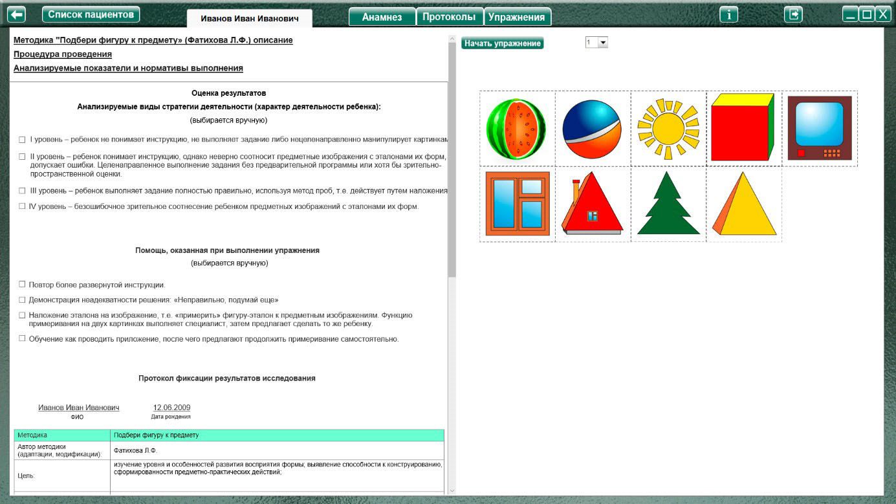
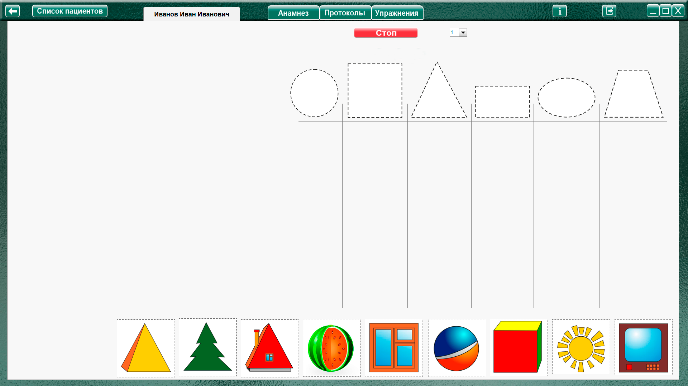
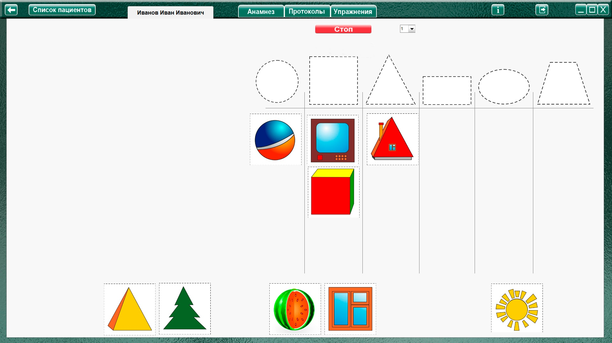

- карточки с предметными изображениями:
первая серия: арбуз, мяч, солнце, кубик, телевизор, окно, крыша, елка, пирамидка;
вторая серия: кирпич, шкаф, книга, огурец, яйцо, дыня, ведро, цветочный горшок, фартук;
третья серия: кресло, грузовик, коляска, чашка, корзина, шапочка, груша, лампочка, матрешка, пирамида, перец, ракета;
- 10 силуэтных эталонов форм
Процедура проведения.
Перед ребенком выкладываются эталоны форм и дается инструкция: «Нужно разложить подходящие к фигуркам картинки. Вот так (на примере двух картинок демонстрируется принцип
группировки)». Далее ребенку посредством жестов предлагается продолжить работу самостоятельно. Серии предъявляются последовательно.
Анализируемые показатели и нормативы выполнения
I уровень – ребенок не понимает инструкцию, не выполняет задание либо нецеленаправленно манипулирует картинками.
II уровень – ребенок понимает инструкцию, однако неверно соотносит предметные изображения с эталонами их форм, допускает ошибки.
III уровень – ребенок выполняет задание полностью правильно, используя метод проб, т.е. действует путем наложения.
IV уровень – безошибочное зрительное соотнесение ребенком предметных изображений с эталонами их форм.
Виды помощи
1. Если ребенок действует соответственно I уровню выполнения, инструкция дается в более развернутой форме, содержание задания уточняется, сопровождается выраженными жестами: «К кругу нужно положить предметы круглой формы (экспериментатор обводит эталон рукой), к квадрату – квадратной ...».
2. При регистрации II уровня выполнения задания, ребенку говорят: «Неправильно, подумай еще».
3. Испытуемому предлагают наложить эталон на изображение, т.е. «примерить» фигуру-эталон к
предметным изображениям. При этом функцию примеривания на двух картинках выполняет
экспериментатор, затем предлагает сделать то же самое ребенку.
4. Испытуемому показывают, как проводить приложение, т.е. обучают, после чего предлагают продолжить примеривание самостоятельно.
Данные виды помощи могут предъявляться в каждой серии в зависимости от того, врабатывается ребенок в задание или нет. За безошибочное выполнение задания на уровне зрительного соотнесения оценка – 3 балла. Таким образом, максимальная сумма баллов по трем сериям составит 9 баллов. Использование проб уменьшает эту оценку на 0,5 балла. Количество предъявляемой помощи также снижает балл оценивания – каждый вид помощи уменьшает сумму баллов на 0,5 балла.
Оценка результата
Группы детей |
Баллы |
Нормально развивающиеся дошкольники |
6-9 |
Дошкольники с задержкой психического развития |
3-8 |
Дошкольники с умственной отсталостью |
0-4,5 |
Нормально развивающиеся дошкольники выполняют данное задание достаточно успешно, особенно первую и вторую серию. При выполнении задания дети руководствуются зрительным
соотнесением. Отмечается четкая тенденция к переносу детьми усвоенного действия от первой серии ко второй. Некоторые трудности у дошкольников может вызвать задание третьей серии, с
нетрадиционными эталонными фигурами. Однако даже здесь детям требуется только стимулирующая помощь, реже направляющая, в виде использования действия примеривания.
Дошкольники с ЗПР понимают поставленную перед ними диагностическую задачу и чаще всего показывают III уровень выполнения задания (правильно соотносят предметы с эталонами
«методом проб»), реже демонстрируют II уровень выполнения (допускают ошибки в действии соотнесения). Таким образом, дети с ЗПР нуждаются во втором и третьем видах помощи. Дошкольники данной группы характеризуются склонностью адаптировать положение карточки с изображением предмета под стимульную фигуру. Так, они могут расположить шкаф в лежачем положении, шапку в перевернутом виде и т.п. Дети с ЗПР переносят усвоенный в первой серии способ деятельности на задание второй серии, которую они выполняют быстрее и продуктивнее. Задание третьей серии вызывает большие трудности, чем первые две, в связи с нестандартностью эталонных фигур.
Дошкольники с умственной отсталостью не всегда понимают инструкцию при первом предъявлении, в связи с чем нуждаются в оказании первого вида помощи – даче экспериментатором более развернутой инструкции. Часть детей данной группы показывает
I уровень выполнения задания, другая часть – II уровень. Дошкольники данной группы начинают использовать примеривание после неоднократного обучения, т.е. применения четвертого вида
помощи. Однако даже в условиях примеривания наблюдаются ошибки в соотнесении предметов и эталонных фигур. Так же, как и у детей с ЗПР, у детей с умственной отсталостью наибольшие трудности вызывает задание третьей серии.
Оценка результатов
Характер деятельности ребенка
- I уровень – ребенок не понимает инструкцию, не выполняет задание либо нецеленаправленно манипулирует картинками.
- II уровень – ребенок понимает инструкцию, однако неверно соотносит предметные изображения с эталонами их форм, допускает ошибки. Целенаправленное выполнение задания без предварительной программы или хотя бы зрительно-пространственной оценки.
- III уровень – ребенок выполняет задание полностью правильно, используя метод проб, т.е. действует путем наложения.
- IV уровень – безошибочное зрительное соотнесение ребенком предметных изображений с эталонами их форм.
Виды возможной помощи:
- Повтор более развернутой инструкции.
- Демонстрация неадекватности выполнения словами: «Неправильно, подумай еще»
- Наложение эталона на изображение, т.е. «примерить» фигуру-эталон к предметным изображениям. Функцию примеривания на двух картинках выполняет специалист, затем предлагает сделать то же ребенку.
- Обучение как проводить приложение, после чего предлагают продолжить примеривание самостоятельно.
Протокол фиксации результатов исследования
_________________________________ _______________
ФИО Дата рождения
Методика |
Подбери фигуру к предмету |
|||
Автор методики (адаптации, модификации) |
Фатихова Л.Ф. |
|||
Цель: |
изучение уровня сформированности перцептивных действий; выявление способности соотносить предмет с эталоном, уровня сформированности знаний о формах; выявление способности к переносу усвоенного перцептивного действия в новые условия. |
|||
Дата / специалист |
||||
Результат: баллы (макс.) / вывод об уровне развития |
||||
Примечание |
||||
Процесс выполнения диагностического задания |
||||
№ |
Характер деятельности ребенка |
Виды помощи |
Баллы |
|
1 |
||||
2 |
||||
3 |
||||
Итоговая оценка |
||||
Логика заполнения протокола
Заполняется автоматически
Имя специалиста – логин при входе в программу.
Дата –дата и время прохождения упражнения в формате дд.мм.гггг.
Ячейки «Характер деятельности ребенка», «Виды помощи» заполняются в зависимости от выбора специалиста в поле «Оценка результатов» либо самостоятельно.
Итоговая оценка – сумма баллов за все упражнения.
Остальные ячейки заполняются специалистом самостоятельно. При внесении не целого количества баллов, для разделения целого и десятичного значения использовать запятую. Например: 2,5
.
Выполнение упражнения.

Выбрать в меню номер задания и нажать кнопку "начать упражнение", закрывая область оценки результата и открывая выбранное задание на весь экран.

Выполнить задание согласно пункту «Процедура проведения». Нужно сгруппировать картинки в колонки к нужным эталонным геометрическим фигурам путем перетаскивания с зажатой левой кнопкой мыши.
При перетаскивании геометрических фигур для примеривания, возврат фигуры на место осуществляется по клику левой кнопкой мыши.

По окончании выполнения нажать кнопку «Стоп», откроется поле «Оценки результата.
При необходимости выбрать характер деятельности, виды помощи, и нажать кнопку «Сформировать протокол». Произвести оценку результата (заполнить оставшиеся ячейки протокола) согласно пункту «Анализируемые показатели и нормативы выполнения».
Только после формирования протокола по заданию можно перейти к продолжению выполнения упражнения!